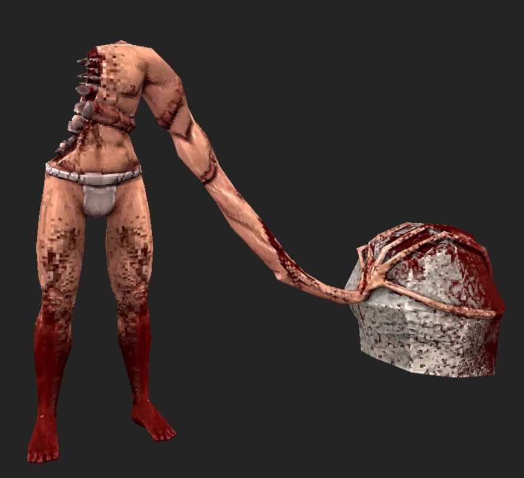
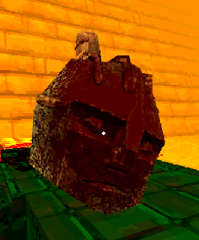
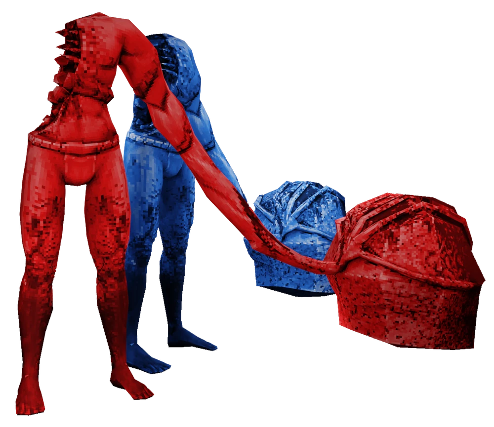

The Sisyphean Insurrectionist is one of the more challenging enemies in ULTRAKILL. Found in the Greed level, it cannot be harmed by normal means and boasts unique attack patterns that test your skills. This guide will cover its behavior, weaknesses, and strategies to defeat it effectively.

Appearance
The Sisyphean Insurrectionist is a grotesque Husk with a headless and armless body. Its horrifying form includes incisor-like teeth protruding from its ribcage, a blood-soaked lower body, and a dead Malicious Face clutched in its left hand. Despite its gruesome look, its mechanics make it a puzzle-like boss to overcome.
Combat Overview
Unique among basic bosses, the Sisyphean Insurrectionist requires a specific approach to defeat. It is vulnerable to fire, taking double damage from it, and slightly more damage from other attacks. Managing its healing mechanics is crucial for victory.
Key Combat Strategy
Set it on fire: Fire prevents the Insurrectionist from healing. Use fire-based weapons or abilities for consistent damage.
Master parrying: The Malicious Face’s attacks can be parried to inflict damage on the boss itself.
Positioning matters: Stay mobile to avoid its powerful shockwave attacks and other AoE moves.

Attacks
The Sisyphean Insurrectionist has an arsenal of attacks focused on its elastic arm and the Malicious Face. Each attack presents opportunities for evasion or counterplay:
Maurice Slam (Head Throw): Throws the Malicious Face straight down. Strafe to dodge or parry for counter damage.
Clockwise Swing: A wide arc attack with its arm. Avoid by stepping back or parrying.
Straight Throw: Throws the Face directly at V1. Easy to sidestep or parry.
Jumping Throw: Jumps and throws the Face, creating a shockwave on landing. Another great parry opportunity.
High Jump (Massive Shockwave): A high jump followed by a ground slam creating a large shockwave. Time your dodge carefully.
Stomp (Spherical Shockwave): Creates an AoE shockwave when V1 is too close. Jump or dodge to avoid damage.

Strategy
To defeat the Sisyphean Insurrectionist, focus on maintaining pressure while managing its healing ability. Here are the top tactics:
Fire is your best friend: Use fire-based weapons to keep it burning and prevent it from regenerating health.
Parry effectively: Learn the timing of the Malicious Face’s attacks and use parries to deal damage and create openings.
Stay on the move: Avoid staying in one place to dodge its shockwave and stomp attacks.
Manage distance wisely: Stay close enough to bait attacks you can counter but far enough to avoid being overwhelmed.
Endgame Tips
As the fight progresses, the Insurrectionist becomes more aggressive. Use the rhythm you’ve established to keep up the pressure and prioritize parrying and setting it aflame. Pay close attention to its high jump and shockwave patterns to avoid unexpected damage.